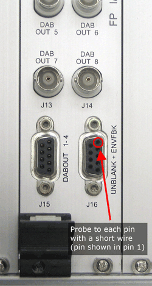

- 00000018WIA302E2E20GYZ
- id_131072273.0
- Aug 29, 2019 1:38:15 AM
EFB and Unblank Signal Generator
Diagnostic Link
Diagnostics > Peripherals >> Unblanking Functional Diagnostic
Purpose
UNBLANK, UNBLANK2, EFB and EFB2 are played out at different duty cycles to verify that these signals are generated by the IRF, transferred through the IRF I/O board, and visible at the remote RF.
Components Tested
-
APS Board
-
IRF Board
-
IRF I/O
Requirements
-
APS Board
-
IRF Board
-
IRF I/O
-
Oscilloscope
Test Sequence
-
Remove the cable from the Remote RF front panel's J16 Serial Connector.
-
Click Run.
-
Probe each pin of the J16 connector with a short piece of wire such as a paper clip (shown below), and connect the probe to the wire to get a reading.

Expected Results
Each pin should have a reading as noted below.
| Pin 1 | UNBLNK_P | Pin 6 | UNBLNK_N |
| Pin 2 | ENVFBK_P | Pin 7 | ENVFBK_N |
| Pin 3 | UNBLNK2_P | Pin 8 | UNBLNK2_N |
| Pin 4 | ENVFBK2_P | Pin 9 | ENVFBK2_N |
| Pin 5 | GND |
-
UNBLANK will be a 10 µS pulse every 70µS.
-
ENVFBK will be a 20µS pulse every 70 µS.
-
UNBLANK2 will be a 30µS pulse every 70 µS.
-
ENVFBK2 will be a 40 µS pulse every 70 µS.
-
The xxx_P signals are inactive at 5 volts and active at 0 volts.
-
The xxx_N signals are inactive at 0 volts and active at 5 volts.